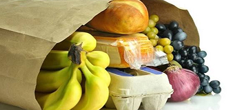
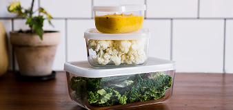
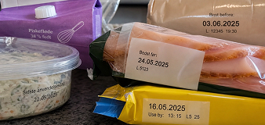
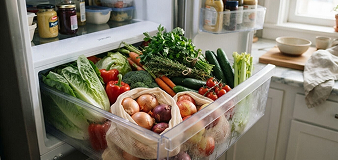
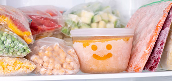

Sådan undgår du at smide maden ud
Madspild er med til at belaste klimaet, og det koster os mange penge, som kunne være blevet sparet. Vi har samlet nogen råd du kan prøve at integrere i din hverdag.

1. Planlæg dine indkøb
Lav en indkøbsliste, inden du tager i supermarkedet. På den måde køber du kun det, du har brug for, og undgår at købe for mange varer, som ender med at blive smidt ud.

2. Brug dine madrester
Gem rester fra aftensmaden i køleskabet, og brug dem til frokost eller i en ny ret dagen efter. På den måde får du mere ud af maden og sparer samtidig penge.

3. Hold øje med datomærkninger
Kig på madens holdbarhedsdato, så du får brugt de varer, der snart udløber. Husk, at "bedst før" ofte betyder, at maden stadig kan spises efter datoen, hvis den ser ud, lugter og smager normalt.

4. Opbevar maden korrekt
Sørg for at opbevare dine madvarer på den rigtige måde, så de holder sig friske længere. Brug køleskab og fryser, når det er nødvendigt, og luk emballagen ordentligt efter brug.

5. Frys maden ned
Hvis du har mad eller råvarer, som du ikke når at spise, kan du fryse dem ned. Det kan for eksempel være brød, kød, grøntsager eller rester fra aftensmaden. Så kan du gemme maden til en anden dag i stedet for at smide den ud.
